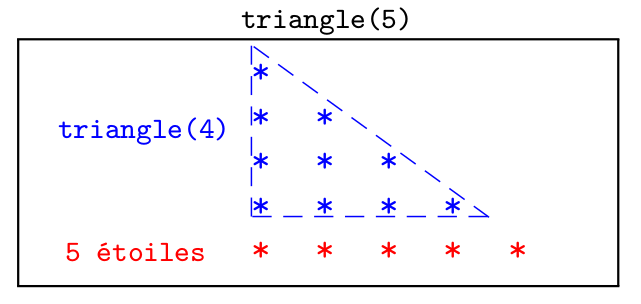
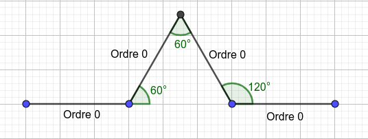
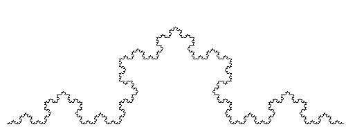

C6 Récursivité ¶
Cours¶
Attention
Ce diaporama ne vous donne que quelques points de repères lors de vos révisions. Il devrait être complété par la relecture attentive de vos propres notes de cours et par une révision approfondie des exercices.
Exemple introductif¶
On veut écrire une fonction qui produit l'affichage de triangles de n lignes, la première ligne contenant un *, la seconde deux * et ainsi de suite. Par exemple pour n=4, la fonction doit afficher :
Une des possibilités est d'utiliser une boucle, on dit que la fonction est itérative :
En observant la représentation ci-dessous, on constate aussi qu'il est possible de définir un triangle de 5 lignes par rappport à un triangle de 4 lignes, et plus généralement un triangle de n lignes par rapport à un triangle de n-1 lignes :

En effet, construire un triangle de n lignes c'est :
- construire un triangle de
n-1lignes - ajouter une ligne de
nétoiles
on vient de donner une méthode de construction récursive, qui doit se compléter en précisant qu'elle n'est valable que pour n>0. Cette définition trouve se traduit en python par :
Définition¶
A retenir
Une fonction est dite récursive lorsqu'elle fait appel à elle-même. Par conséquent,
- une fonction récursive permet, comme une boucle, de répéter des instructions puisque le bloc d'exécution de la fonction est rappelé (mais avec des paramètres différents).
- une même fonction peut donc se programmer de façon itérative (avec des boucles) ou de façon récursive (en s'appelant elle-même).
- une fonction récursive doit toujours contenir au moins une condition d'arrêt (sinon elle s'appellera elle-même à l'infini)
Exemples corrigés¶
Factorielle d'un entier¶
La factorielle d'un entier est le produit de cet entier par tous ceux qui le précèdent (excepté 0). Cette fonction a déjà été programmé de façon itérative mais elle s'exprime aussi par rapport à elle même et donc peut être programmé de façon récursive, en effet :
\(n! = n \times \underline{(n-1)\times \dots \times 1}\) et puisque la partie soulignée vaut \((n-1)!\) :
\(n! = n \times (n-1)!\)
Cette écriture se traduit directement en Python par :
Il faut bien comprendre que par exemple pour calculer factorielle(4) python procédera de la façon suivante :
- calculer
factorielle(3)et le multiplier par 4 - calculer
factorielle(2)et le multiplier par 3 - calculer
factorielle(1)et le multiplier par 2 - calculer
factorielle(0)et le multiplier par 1 - comme la condition d'arrêt donc
factorielle(0)=1, on peut remonter dans le calcul et obtenir 24
Somme des éléments d'une liste¶
La somme des élements d'une liste \(l = [l[0],\dots l[1]]\) peut s'exprimer ainsi :
- si la liste est vide c'est zéro (condition d'arrêt)
- sinon c'est le premier élément de la liste plus la somme de la liste à partir du second élément
c'est donc une définition récursive puisque nous avons exprimé la somme d'une liste à partir de la somme d'une (autre) liste. En python, il suffit de pouvoir exprimer la liste à partir du second élement à l'aide du tranche et on peut écrire :
Retourner une chaine de caractère¶
Note
En cas de besoin, on conseille de revoir les tranches avant d'aborder cet exemple.
On veut écrire une fonctions récursive qui renvoie la chaine de caractère donnée en argument à l'envers. Par exemple envers("Python") doit renvoyer "nohtyP". Comme précédemment, afin d'écrire une version récursive de cette fonction, il faut exprimer l'envers d'une chaine par rapport à l'envers d'une autre chaine (plus courte). On peut remarquer que pour écrire une chaine à l'envers, il suffit d'écrire son dernier caractère puis l'envers du reste de la chaine ce qui se traduit en Python par :
 Exercice 1 : A vous de jouer !¶
Exercice 1 : A vous de jouer !¶
-
Ecrire une version récursive des fonctions suivantes :
-
Fonction
puissance, qui prend en argument un nombre \(x\) et un entier \(n\) (positif) et renvoie \(x^n\). -
Fonction
palindrome, qui prend en argument une chaine de caractère et qui renvoietruelorsque cette chaine est un palindrome -
Fonction
maximum, qui prend en argument une liste d'entiers et renvoie le maximum des éléments de cette liste. -
Fonction
occurences, qui prend en argument une liste d'entierslet un entiernet renvoie le nombre d'apparitions dendansl.
-
-
Modifier la fonction
triangle_recursifde l'exemple introductif afin d'afficher le même triangle mais "pointe vers le bas". -
Exercice 2 : Exponentiation rapide¶
Pour calculer \(a ^ {13}\) on peut effectuer \(13\) multiplications en calculant \(1\times a \times a \dots \times a\), une autre méthode consiste à calculer d'abord \(a^6\) puis à l'élever au carré et à multiplier par \(a\). C'est à dire qu'on utilise l'égalité \(a^{13} = \left(a^6\right)^2 \times a\). On obtient donc une nouvelle écriture récursive qui s'avère encore plus simple à mettre en oeuvre lorsque l'exposant est paire, par exemple \(a^{20} = \left(a^{10}\right)^2\).
- Vérifier sur le cas de \(a^{13}\) que le nombre de multiplications nécessaires est inférieur à celui de la méthode naïve
- Ecrire une fonction Python implémentant ce nouvel algorithme (on fera bien attention à traiter le cas de l'exposant paire et celui de l'exposant impaire)
Exercice 3 : Chateau de cartes¶
Un château de cartes est un échafaudage de cartes à jouer. On a représenté ci-dessous des chateaux de cartes à 1, 2 et 3 étages (crédit : DREAMaths):

-
On note \(c_n\) le nombre de cartes nécessaires pour construire un chateau de cartes à \(n\) étages. Etablir une relation de récurrence entre \(c_n\) et \(c_{n-1}\).
-
Ecrire une fonction récurrente qui renvoie \(c_n\) pour la valeur \(n\) fournie en argument .
-
Calculer \(c_{100}\) à l'aide de votre programme. Vous pouvez vérifier le résultat fourni par votre programme ci-dessous :

-
Retrouver ce résultat par le calcul
Exercice 4 : Additions et soustractions¶
On suppose qu'on ne dispose que de deux opérations : ajouter 1 ou retrancher 1.
- Écrire à l'aide de ces deux opérations, une version itérative de l'addition de deux entiers.
- Même question avec une version récursive.
Exercice 5 : Algorithme d'Euclide de calcul du pgcd¶
- Revoir si besoin l'algorithme d'Euclide permettant de calculer le pgcd de deux entiers.
- Donner une implémentation itérative de cet algorithme
- Donner une implémentation récursive de cet algorithme
Exercice 6 : Chiffres romains¶
En numération romaine, les nombres s'écrivent avec les symboles suivants :
- I valant 1
- V valant 5
- X valant 10
- L valant 50
- C valant 100
- D valant 500
- M valant 1000
On lit un nombre de la gauche vers la droite, si la valeur d'un symbole est inférieure à celle du suivant alors on retranche sa valeur du total, sinon on l'ajoute. Par exemple, XIV vaut 14 car la valeur du I doit être retranchée (car inférieure à celle de V).
-
Ecrire une fonction de signature
int valeur_symbole(char s)qui renvoie la valeur du symbole donné en argument.Note
On peut utiliser une suite de
ifimbriqués ou alors unswitch(mais qui n'est pas au programme de MP2I). -
Ecrire une fonction récursive de signature
int valeur(char s[])qui renvoie la valeur du nombre romainssdonné sous la forme d'une suite de caractères.
Exercice 7 : Dessin récursif¶
Attention
L'exercice suivant utilise le module turtle, pour utiliser ce module, on écrira toujours en début de programme :
crayon et d'un papier (ces noms sont à choisir librement).
En fin de programme, on écrira toujours
De façon à ce que la fenêtre graphique contenant le dessin attende un click pour se refermer.
Le crayon est initialement situé en \((0,0)\) et orienté vers la droite. Pour manipuler le crayon, on dipose notamment de :
crayon.forward(l)pour le faire avancer delpixelscrayon.left(d)etcrayon.right(d)afin de tourner à droite ou à gauche deddegrés.crayon.penup()etcrayon.pendown()pour relever ou abaisser le crayon.crayon.goto(x,y)pour déplacer le crayon au point de coordonnées(x,y)
On pourra consulter la documentation complète du module.
- Ecrire une fonction
carrequi prend en argument un entiernet dessiner à partir de la position et de l'orientation courant de la tortue un carré de côténpixels. -
Dessiner une suite de carrés imbriqués tel que représenté ci-dessous (le carré initial mesure 300 pixels de côté et la taille diminue ensuite de 30 pixels à chaque carré)

-
Si vous aviez donné une version itérative de ce dessin, en faire une version récursive et inversement.
Exercice 8 : Dessin du flocon de Von Koch¶
Attention
L'exercice suivant utilise le module turtle déjà rencontré dans l'exercice précédent.
La courbe de Koch est une figure qui se construit de manière récursive. Le cas de base d'ordre 0 et de longueur \(l\) s'obtient en traçant un segment de longueur \(l\) . Le cas récursif d'ordre \(n>0\) s'obtient en traçant successivement quatre courbes d'ordre \(n-1\) et de longueur \(l/3\) de la façon suivante :

-
A l'aide du module
turtle, produire une image tel que ci-dessous qui représente la courbe de Koch d'ordre 5. Le résultat produit ci-dessus a été obtenu grâce à l'appelkoch(600,5)(la largeur de l'image est de 500px et sa hauteur 300)
-
En utilisant cette fonction construire le flocon de Koch, c'est-à-dire la figure obtenu en construisant les courbe de Koch sur les trois côtés d'un triangle équilatéral.
# Tests(insensible à la casse)(Ctrl+I)
(Alt+: ; Ctrl pour inverser les colonnes)
(Esc)